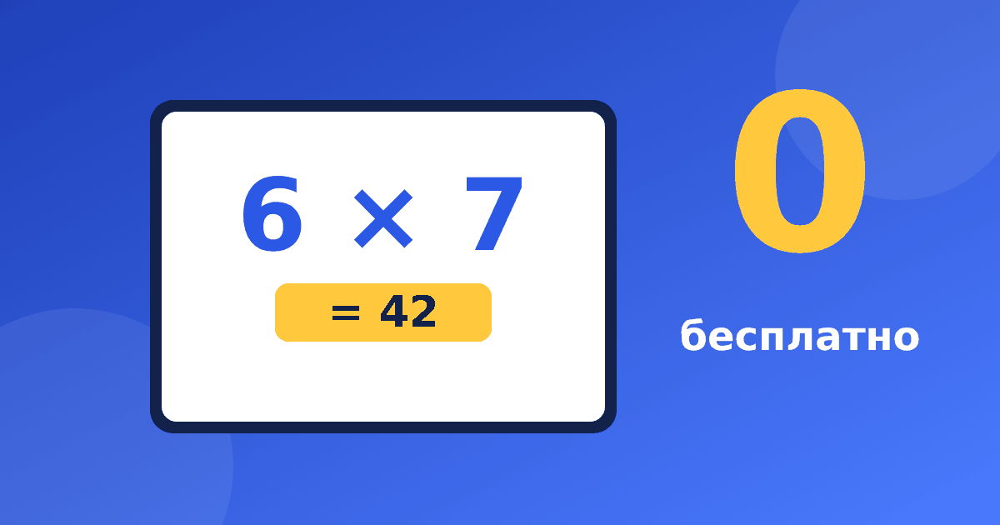

Как выбрать хороший бесплатный тренажёр для таблицы умножения

Если набрать в поисковике «бесплатный тренажер таблица умножения», откроются десятки страниц, и на вид они похожи: яркие кнопки, примеры, звёздочки за ответы. Но устроены они по-разному. Одни помогают понять таблицу, другие просто гоняют одни и те же примеры на скорость. Ниже чек-лист, по которому за несколько минут можно отличить полезный сервис от развлечения.
Что должен уметь хороший тренажёр
Объяснять, а не только проверять
Ребёнок, который не понимает, откуда взялось 7 × 6 = 42, начинает угадывать. Хороший сервис показывает умножение как группы предметов или шаги по числовой прямой, а при ошибке подсказывает ход мысли, а не просто красит ответ в красный. Проверьте сами: ошибитесь нарочно и посмотрите, что произойдёт.
Не давить таймером
Обратный отсчёт и рейтинг «кто быстрее» вызывают тревогу, а не знание. Беглость приходит, когда ответ уже знаком, и подгонять её бесполезно. Ищите режим без секундомера. О том, чем вредит спешка, мы писали в статье про ошибки родителей.
Обходиться без рекламы
Мигающий баннер посреди примера съедает внимание. Посмотрите, нет ли всплывающих окон, ссылок на сторонние игры и кнопок «скачать».
Включать и умножение, и деление
Деление опирается на те же факты. Если 6 × 7 = 42, то 42 ÷ 6 = 7 и 42 ÷ 7 = 6. Когда в сервисе есть только умножение, придётся искать второй. Поэтому полезен именно онлайн тренажер таблица умножения и деления в одном месте. Как связаны два действия, подробно разбирает статья про деление как обратное умножение.
Показывать понятный прогресс
Родителю и ребёнку важно видеть, какие столбики уже освоены, а какие ещё шатаются. Без баллов и мест в рейтинге: прогресс нужен, чтобы выбрать, что повторить завтра, а не чтобы сравниваться с другими.
Бесплатный — это насколько
Слово «бесплатный» бывает разным. Проверьте, что именно доступно без оплаты.
- Можно ли решать примеры по всей таблице или открыты только 5 заданий.
- Не просят ли привязать карту «для пробного периода».
- Нужна ли регистрация с именем и возрастом ребёнка. Лучше, когда она не нужна вовсе.
- Где хранится прогресс. Если на устройстве, то при смене телефона он не перенесётся, и об этом стоит знать заранее.
Проверка за 5 минут
Перед тем как посадить ребёнка, откройте сервис сами. Таблица умножения онлайн должна пройти такой тест.
- Решите 5 примеров и намеренно ошибитесь в двух.
- Найдите режим с делением.
- Посмотрите, есть ли картинки или схемы, объясняющие ответ.
- Убедитесь, что нигде не тикает таймер.
- Закройте страницу и откройте снова, проверьте, сохранился ли результат.
Как пользоваться, когда выбрали
Подойдёт любая таблица умножения тренажер онлайн, если заниматься с ним правильно: по 10–15 минут, лучше каждый день, чем два часа по выходным. Сколько времени разумно отводить, подробно написано в статье сколько заниматься в день. Начинайте с одного столбика и переходите дальше, когда ребёнок отвечает на примеры без пересчёта.
Наш тренажёр сделан по тем же принципам. Он объясняет умножение наглядно, на картинках, занятия короткие, таймера и рейтингов нет, часть заданий бесплатна, а регистрация не нужна. Прогресс хранится на вашем устройстве. Попробовать можно здесь.
Что подойдёт для какого класса
Требования меняются с возрастом, и это важно учитывать. Когда вы ищете бесплатный тренажер таблица умножения для второклассника, смотрите на наглядность и маленькие порции. Ребёнку нужны картинки с группами предметов и один столбик за раз. Третьекласснику нужны перемешанные примеры и деление, а четвероклассник уже использует таблицу внутри длинных вычислений, и ему важна беглость на всех столбиках сразу.
Тревожные признаки
Некоторые сервисы выглядят привлекательно, но работают против ребёнка. Насторожитесь, если вы видите хотя бы одно из следующего.
- Ошибка сопровождается грустным звуком или потерей «жизней».
- Награды выдаются только за скорость, а не за правильное решение.
- Примеры идут только по порядку, и ребёнок может пройти уровень, не думая.
- Для продолжения просят пригласить друзей или поделиться ссылкой.
- Нет ни одной подсказки, а есть лишь «верно» и «неверно».
Хорошая таблица умножения тренажер онлайн, наоборот, спокойна. Она позволяет ошибаться, объясняет и даёт вернуться к трудному.
Если вам нужен онлайн тренажер таблица умножения и деления без лишнего, ориентируйтесь на этот список, а не на красивую картинку на главной странице. Лучший сервис тот, к которому ребёнок возвращается без напоминаний, но не из-за призов, а потому что ему там понятно.
Какой бы сервис вы ни выбрали, помните главное. Тренажёр помогает, но не заменяет разговор. Спросите ребёнка, как он получил ответ, и вы быстро увидите, где знание настоящее, а где угадывание. Если нужна бесплатная таблица умножения онлайн для ежедневных десяти минут, этого достаточно.